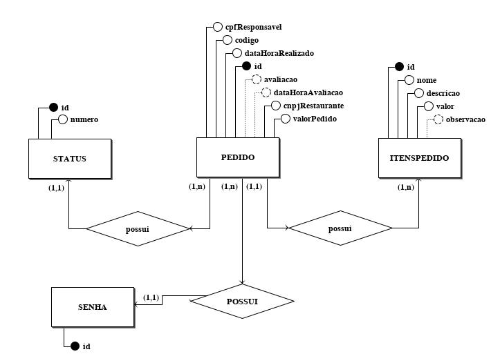

Documento de Arquitetura
Histórico de Revisão
| Data | Versão | Descrição | Autor |
|---|---|---|---|
| 13/11/2019 | 0.1 | Estrutura do Documento, Introdução e Representação Arquitetural | Pedro Féo |
| 14/11/2019 | 0.2 | Casos de uso, visão de processo e visão de tamanho e desempenho | Matheus Blanco |
| 15/11/2019 | 0.3 | Refatorando diagramas e adicionando mais visões de processo | Matheus Blanco |
| 15/11/2019 | 0.4 | Requisitos e restrições arquiteturais, visão geral de classes e pacotes | Matheus Blanco |
| 16/11/2019 | 0.5 | Modelos/Padrões Arquiteturais | Saleh Kader |
| 17/11/2019 | 0.6 | Visão de dados | Matheus Blanco |
| 17/11/2019 | 0.7 | Visão de implementação | Pedro Féo |
| 17/11/2019 | 0.8 | Qualidade | Saleh Kader |
| 17/11/2019 | 0.9 | Visão de Implantação | Matheus Blanco |
| 17/11/2019 | 1.0 | Complementação do tópico de qualidade | Shayane Alcântara |
1 Introdução
1.1 Finalidade
A intenção desse documento é documentar e transmitir informações relevantes ao QRComer do ponto de vista arquitetural. Facilitando a visualização e entendimento da estrutura do projeto.
1.2 Escopo
Este Documento de Arquitetura de Software se aplica ao Sistema QRComer. Desenvolvido na disciplina de Arquitetura e Desenho de Software da Universidade de Brasília.
1.3 Definições, Acrônimos e Abreviações
- UnB - Universidade de Brasília
- FGA - Faculdade do Gama
- QRComer - Sistema web com a intenção de reduzir filas em praças de alimentação
- Backend - Parte do sistema responsável por prover e organizar recursos para a interfáce do sistema
- Frontend - Parte do sistema responsável por ser a interfáce entre o sistema e o usuário
- HTTP - Hypertext Transfer Protocol
- API: Application Programming Interface
1.4 Referências
- Translate-me
- Unigrade
- Kalkuli
- https://www.cin.ufpe.br/~gta/rup-vc/extend.formal_resources/guidances/examples/resources/sadoc_v1.htm
- https://www.cin.ufpe.br/~gta/rup-vc/core.informal_resources/guidances/examples/resources/ex_sad.htm
- Redhat
- Movile
2 Representação da Arquitetura
2.1 Componentes Importantes
Vue
Vue é um framework progressivo para a construção de interfaces para o usuário. O framework apresenta uma arquitetura baseada em componentes, permitindo a criação de telas completas e também pedaços de código isolados.
Sass
Sass é uma extensão de CSS que permite o uso de variáveis, regras de alinhamento, mixins e importações de outros arquivos. O Sass facilita a organização das folhas de estilo além de acelerar sua execução.
Django REST
O framework Django REST é um conjunto de ferramentas otimizada para a construção de Web APIs em Python. O framework foi escolhido mediante votação pelos membros, visto que a maioria possuia conhecimento desta tecnologia.
Flask
Flask é um micro-framework em Python que provê um modelo simples para desenvolvimento web. Como estamos lidando com uma arquitetura de microsserviços, que são indenpendentes entre si, foi possível utilizar este framework pela facilidade de manuseio e desenvolvimento.
Microserviços
A arquitetura de microserviços é uma solução arquitetural distribuída que desmembra o sistema da aplicação em pequenos blocos independentes, chamados de serviços. Cada um possuíndo seus próprios processos e banco de dados e se comunicam entre si através de requiisções HTTP. Os serviços utilizados na aplicação serão:
- Restaurante, serviço responsável por conter as informações a respeito do shopping, restaurantes e cardápios. Desenvolvido utilizando Django REST.
- Pedidos, serviço responsável por tratar toda a lógica que envolve um pedido, desde quando é produzido até ser concluído. Desenvolvido utilizando Django REST.
- Usuário, serviço responsável por conter as lógicas de autenticação e armazenar as informações dos usuários e seus cartões. Desenvolvido utilizando Django REST.
- Gateway, serviço responsável por intermediar a comunicação entre os demais serviços. Desenvolvido utilizando Flask.
- Frontend, serviço responsável por ser a interface entre o sistema e o usuário. Desenvolvido em Vue.js.
Comunicação entre serviços
A comunicação entre os serviços será realizada através da API Gateway, responsável por utilizar o protocolo HTTP para intermediar a comunicação, cada um com seu banco de dados, exceto o Gateway.
2.2 Diagrama de Arquitetura

Obs.: Foi realizada uma mudança na arquitetura original do projeto, sendo removidas o Frontend de interação com o restaurante, sendo substituído por um acesso especializado ao backend do sistema, para que o QRComer possa ser facilmente integrado à sistemas já existentes. Além disso foi removido o serviço de pagamento, tendo em vista que para o escopo da disciplina o serviço mostrou-se inviável.
3 Requisitos e Restrições Arquiteturais
| Requisito | Solução |
|---|---|
| Linguagem | O front-end será feito em JavaScript, e o back-end em Python |
| Plataforma | O front-end será feito na plataforma VueJS e o back-end será feito na plataforma DjangoREST |
| Segurança | Será implementado um sistema de token para que os dados sensíveis do usuário, shopping e restaurantes posssam permanecer seguros. |
| Persistência | O sistema funcionará a partir de uma grande quantidade de transações entre o back-end e o front-end, onde dados de shoppings, restaurantes e pedidos serão a todo momento manipulados. Com foco nos dados relativos a pedidos, os quais serão continuamente criados ou deletados. Sendo assim, será utilizado um banco de dados relacional PostgreSQL, além de dados temporários localstorage dos navegadores, para permitir uma utilização mais fluida e persistente |
| Arquitetura | Será implementada uma arquitetura e microsserviços, para que os serviços separados possam se comunicar um com o outro de maneira simples e sem demanda de várias quantidades de memória e processamento, graças à sua natureza desacoplada. |
4 Visão de Caso de Uso
4.1 Caso de Uso da aplicação com requisitos de priorização Must have
Provindo da documentação referente ao seminário 3, este diagrama de caso de uso procura demonstrar o funcionamento geral da aplicação QRComer.

| UC01 | Caso de Uso dos Requisitos |
|---|---|
| Versão | Atual: 1.2 (14/11) Anterior: 1.1 |
| Descrição | Caso de uso dos requisitos. |
| Autor | Shayane Alcântara, Elias Bernardo, Leonardo, Matheus Blanco |
4.1.1 Atores
| Atores | Descrição |
|---|---|
| Usuário | Utilizador da plataforma, consumidor de produtos alimentícios presentes em shoppings e praças de alimentação |
| Gerador de QR-Code | Funcionalidade geradora do QR-Code que permite o acesso à aplicação |
| Serviço de pagamento | Funcionalidade que simula um serviço real de pagamento |
| Restaurante | Utilizador do cadastro de informações, comerciante que pretende utilizar a aplicação para vender seus produtos alimentícios |
4.1.2 Descrição dos Casos de Uso
| Casos de Uso | Descrição dos Casos de Uso |
|---|---|
| UC01 - Cadastrar | O usuário realiza o cadastro na aplicação |
| UC02 - Preencher Formulário | O usuário insere as informações necessárias |
| UC03 - Fazer Login | O usuário acessa a aplicação |
| UC04 - Alterar senha | O usuário requisita uma alteração de senha |
| UC05 - Gerar QR-Code | O gerador de QR-Code cria um link de acesso para o shopping |
| UC06 - Ler QR Code no shopping | O usuário acessa o shopping a partir do link contido no QR-Code |
| UC07 - Acessar a aplicação web | O gerador de QR-Code acessa a aplicação a partir da identificação do shopping |
| UC08 - Identificar shopping pelo QR-Code | O gerador de QR-Code gera um código diferente para cada shopping, tornando o link seu identificador |
| UC09 - Ver lista de restaurantes | O usuário vê, na página do shopping, todos os restaurantes existentes no mesmo |
| UC10 - Selecionar restaurante | O usuário escolhe e abre um restaurante a partir da lista |
| UC11 - Selecionar produto | O usuário escolhe e seleciona o produto na página de restaurante |
| UC12 - Adicionar produto à sacola | O usuário confirma a seleção do produto e o mesmo é adicionado à sacola de pedidos |
| UC13 - Editar produtos da sacola | O usuário regula a quantidade de produtos na sacola |
| UC14 - Visualizar itens da sacola | O usuário pode ver, na sacola, todos os itens escolhidos |
| UC15 - Finalizar pedido | O usuário confirma os itens na sacola e finaliza o pedido |
| UC16 - Inserir forma de pagamento e adicionar CPF | O usuário escolhe o cartão que deseja usar e adiciona o CPF para nota fiscal, na sacola |
| UC17 - Cadastrar cartões | O usuário cadastra os seus cartões de crédito na conta da aplicação |
| UC18 - Visualizar cartões cadastrados | O usuário pode visualizar todos os cartões cadastrados em sua conta |
| UC19 - Remover cartões cadastrados | O usuário pode remover todos os cartões cadastrados em sua conta |
| UC20 - Visualizar cartões cadastrados | O usuário pode visualizar todos os cartões cadastrados em sua conta |
| UC21 - Efetuar pagamento | O usuário confirma o pedido e o serviço de pagamento debita o valor de seu cartão escolhido |
| UC22 - Cancelar produto | O usuário deleta um ou todos os itens da sacola |
| UC23 - Integrar com API de pagamento | O serviço de pagamento simula uma API real de pagamento |
| UC24 - Acessar o back-end para cadastro de dados | O restaurante acessa o serviço de cadastro de informações do back-end |
| UC25 - Cadastrar restaurante | O restaurante adiciona as informações jurídicas necessárias para cadastrar o restaurante |
| UC26 - Adicionar cardápio do estabelecimento | O restaurante adiciona os itens ao seu cardápio, com valores, descrição e imagens |
| UC27 - Receber pedido | O restaurante recebe o pedido criado pelo usuário, para preparação do alimento |
| UC28 - Gerar senha | O usuário e o restaurante recebem uma senha gerada pela aplicação |
| UC29 - Receber senha para retirada do pedido | O usuário e o restaurante recebem uma senha gerada pela aplicação |
| UC30 - Receber feedback da compra | O usuário deixa um feedback do produto para o restaurante |
| UC31 - Receber feedback positivo | O restaurante recebe um feedback positivo |
| UC32 - Receber feedback negativo | O restaurante recebe um feedback negativo |
| UC33 - Visualizar mensagem de erro e retornar à sacola | O restaurante envia uma mensagem de erro caso o pedido não possa ser completado |
5 Visão Lógica
Modelagens em padrão UML, que representam os aspectos arquiteturais do sistema.
5.1 Diagramas de Pacotes
5.1.1 Back-End
| DP01 | Diagrama de pacotes do Back End |
|---|---|
| Versão | Atual: 2.0 (19/09) Anterior: 1.1 |
| Descrição | Diagrama de Pacotes para os Microserviços do Back End |
| Autor | Shayane Alcântara e Saleh Kader |
A API é dividida nas seguintes implementações:
- Models, que contém as declarações dos dados a serem utilizados;
- Serializer, que receberá os dados das models e permitirá a sua gravação nos bancos de dados;
- Views, que receberá dos serializers a lógica de gravação e permitirá a implementação de lógicas complementares de dados, além de definir quais ações POST, GET, DELETE e PATCH serão utilizadas;
- Urls, que irá declarar as rotas a serem acessadas tanto pelo microsserviço quanto pelo front-end;
- Test, onde se encontram os testes unitários das models e das views;
- Settings, que define a criação da aplicação, hosts e outras dependências.
5.1.2 Front-end

| DP02 | Diagrama de pacotes do Front End |
|---|---|
| Versão | Atual: 3.0 (19/09) Anterior: 2.0 |
| Descrição | Diagrama de Pacotes para o Front End |
| Autor | Shayane Alcântara e Saleh Kader |
{kind=link}
A pasta principal src contém as subpastas:
- assets, que contem imagens e css adicionados para ajustar a estética da User Interface para os padrões do protótipo;
- services, onde estão contidos alguns arquivos .js que realizam certas funções e trabalhos repetitivos;
- utils, onde está contida a lógica de autenticação de usuário;
- screens, onde estão contidos:
- os componentes principais, a serem reutilizados pelas várias telas do projeto;
- as views, onde se encontram as implementações das telas, as quais fazem uso dos componentes;
- o router, onde se encontram todas as rotas para as telas existentes.
5.2 Diagrama de classes e microserviços
5.2.1 Diagrama de classes do microsserviço de usuário

| DC01 | Diagrama de classes de usuário |
|---|---|
| Versão | Atual: 2.0 (18/09) Anterior: 1.0 |
| Descrição | Diagrama UML das classes do microserviço de usuário |
| Autor | Sara Silva |
5.2.2 Diagrama de classes do microsserviço de Restaurante

| DC02 | Diagrama de classes de restaurante |
|---|---|
| Versão | Atual: 2.0 (19/09) Anterior: 1.0 |
| Descrição | Diagrama UML das classes do microserviço de restaurante |
| Autor | Elias Bernardo e Leonardo Barreiros |
5.2.3 Diagrama de classes do microsserviço de Pedidos
O diagrama a seguir usa a notação UML para descrever as classes do microserviço de restaurante.

| DC03 | Diagrama de classes de pedidos |
|---|---|
| Versão | Atual: 2.0 (13/09) Anterior: 1.0 |
| Descrição | Diagrama UML das classes do microserviço de pedidos |
| Autor | Matheus Blanco |
diagramas de classe, diagramas de pacote, diagramas de de colaboração
tentar explicar a estrutura do projeto de uma forma lógica
6 Visão de Processo
6.1 Processo de cadastro de usuário:

| DS02 | Diagrama de sequência de cadastro de usuário |
|---|---|
| Versão | Atual: 1.0 (19/09) Anterior: - |
| Descrição | Diagrama UML da sequência do cadastro de usuários |
| Autor | Pedro Feo, Saleh Kader |
- O usuário acessa a plataforma;
- O usuário abre a página de cadastro;
- O usuário insere as informações de cadastro;
- O microsserviço de usuários realiza um POST para guardar as informações no banco;
- O microsserviço de usuários valida as informações com o banco de dados;
- O microsserviço de usuários cria o usuário com as informações salvas no banco;
- O usuário é redirecionado à página principal.
6.2 Processo de login de usuário:

| DS02 | Diagrama de sequência de login de usuário |
|---|---|
| Versão | Atual: 1.0 (19/09) Anterior: - |
| Descrição | Diagrama UML da sequência de login de usuários |
| Autor | Saleh Kader |
- O usuário acessa a plataforma;
- O usuário abre a página de login;
- O usuário insere o e-mail e senha e aperta o botão de login;
- O microsserviço de usuário realiza um POST para verificar a existência do usuário no banco de dados;
- Se:
- O usuário existir, com e-mail e senha corretos, o login é realizado;
- O usuário não existir, ou e-mail ou senha errados, o login não é realizado;
- O usuário é redirecionado à página principal.
6.3 Processo de realização de pedido

| DS01 | Diagrama de sequência de realização de pedidos |
|---|---|
| Versão | Atual: 2.0 (19/09) Anterior: 1.0 |
| Descrição | Diagrama UML da sequência do microsserviço de pedidos |
| Autor | Pedro Feo, Matheus Blanco |
{kind=link}
- O usuário acessa a plataforma;
- O usuário abre a página de login;
- O usuário realiza o login e é redirecionado à página principal;
- O usuário acessa a página de shopping;
- O usuário seleciona um restaurante e abre sua página;
- O usuário escolhe e seleciona um item dentro do restaurante;
- O usuário adiciona o item escolhido à sua sacola;
- O usuário confirma o pedido e o mesmo é criado no microsserviço de pedidos;
- A aplicação chama o serviço de pagamento simulado;
- O serviço de pagamento simula um pagamento real, a partir dos dados.
6.4 Processo de cadastro de cartão

| DS02 | Diagrama de sequência de cadastro de cartão |
|---|---|
| Versão | Atual: 1.0 (19/09) Anterior: - |
| Descrição | Diagrama UML da sequência do cadastro de cartão |
| Autor | Pedro Feo |
- O usuário acessa a plataforma;
- O usuário abre a página de login;
- O usuário realiza o login e é redirecionado à página principal;
- O usuário acessa a página de cartão;
- O usuário clica no botão de adicionar cartão;
- O usuário insere as informações do cartão;
- O microsserviço de usuário realiza um POST para salvar os dados no banco de dados;
- O banco de dados cria um cartão a partir dos dados salvos.
6.5 Processo de cadastro de restaurante no back-end

| DC02 | Diagrama de colaboração do microsserviço de Restaurante |
|---|---|
| Versão | Atual: 1.0 (19/09) Anterior: - |
| Descrição | Diagrama UML de colaboração do microsserviço de restaurante |
| Autor | Pedro Rodrigues, Sara Silva |
- O restaurante deve acessar o serviço back-end de CRUD de restaurante;
- O restaurante cria um texto em JSON com as informações do restaurante, incluindo informações jurídicas e nome fantasia;
- O restaurante então cria um texto em JSON para cadastrar uma categoria;
- O restaurante então cria um texto em JSON para cadastrar um item de seu menu;
- O restaurante repete as duas últimas ações para criar a quantidade necessária de categorias e de itens do menu.
6.6 Processo de checagem de pedidos antigos

| DS01 | Diagrama de sequência de checagem de pedidos antigos |
|---|---|
| Versão | Atual: 2.0 (17/09) Anterior: 1.0 |
| Descrição | Diagrama UML da sequência do microsserviço de checagem de pedidos antigos |
| Autor | Pedro Feo, Matheus Blanco |
{kind=link}
- O usuário acessa a plataforma;
- O usuário abre a página de login;
- O usuário realiza o login e é redirecionado à página principal;
- O usuário acessa a página de histórico de pedidos;
- O front-end realiza uma requisição ao serviço de pedidos;
- O serviço de pedidos busca no banco de dados os pedidos anteriormente realizados;
- Os pedidos são enviados e renderizados no front-end;
- O front-end mostra para o usuário os pedidos anteriormente realizados.
6.7 Processo de checagem de pedidos ativos

| DS01 | Diagrama de sequência de checagem de pedidos ativos |
|---|---|
| Versão | Atual: 3.0 (15/11) Anterior: 2.0 |
| Descrição | Diagrama UML da sequência do microsserviço de checagem de pedidos ativos |
| Autor | Pedro Feo, Matheus Blanco |
{kind=link}
- O usuário acessa a plataforma;
- O usuário abre a página de login;
- O usuário realiza o login e é redirecionado à página principal;
- O usuário acessa a página de histórico de pedidos;
- O front-end realiza uma requisição ao serviço de pedidos;
- O serviço de pedidos busca no banco de dados os pedidos que estão ativos;
- Os pedidos são enviados e renderizados no front-end;
- O front-end mostra para o usuário os pedidos ativos.
7 Visão da Implantação
A implantação do sistema será realizada a partir do seguimento das seguintes etapas. Ela terá como objetivo garantir que as funcionalidades entregues para o produto possua a melhor qualidade possível.
| DIA01 | Diagrama de implantação |
|---|---|
| Versão | Atual: 1.0 (17/11) |
| Descrição | Diagrama representando as fases de implantação do sistema |
| Autor | Matheus Blanco |
8 Visão da Implementação
A implementação do sistema é composto de 6 componentes externos, sendo eles servidores e o smartphone do usuário. Cada um dos microserviços apresenta um servidor próprio, onde se encontra sua rest API e seu banco de dados. Enquanto isso o servidor do frontend apresenta apenas um componente, sendo ele o próprio frontend em Vue, já que não necessita de um banco de dados. Toda comunicação entre servidores é feita através protocolo HTTP, enquanto a comunicação entre a API e banco de dados é realizada via TCP/IP.
| DI01 | Diagrama de implementação |
|---|---|
| Versão | Atual: 1.0 (17/11) |
| Descrição | Diagrama UML representando os componentes do sistema e sua comunicação |
| Autor | Pedro Feo |
9 Visão de Dados
9.1 Diagramas
9.1.1 Costumer Service
Diagrama que representa o microsserviço de usuário, suas entidades, usuário e cartão, e seu respectivo relacionamento. No caso, um usuário pode conter um ou mais cartões, sendo que um cartão só póde ser utilizado por um usuário. O cartão recebe do usuário a chave primária CPF, a qual restringe e identifica o usuário cadastrado na aplicação, e os cartões que o mesmo possui.
O usuário possui como atributos cpf como chave primária, e-mail, nome e senha, sendo que estes últimos são necessários para a realização do cadastro na aplicação e todos, menos e-mail e cpf, podem ser alterados.
Diagrama Entidade Relacionamento

| DER01 | DER |
|---|---|
| Versão | Atual: 1.0 (16/09) Anterior: - |
| Descrição | Diagrama Entidade Relacionamento para o microserviço de usuário |
| Autor | Alan Lima |
9.1.2 Restaurant Service
O microsserviço de restaurante faz uso de uma série de entidades e relacionamentos, pelo fato de necessitar de uma quantidade maior de dados para que seu funcionamento seja otimizado. A entidade restaurante possui horários de funcionamento, categorias e cardápios, além de estar inserida dentro de um shopping. Ela recebe a chave primária CNPJ do shopping para utilizar como identificador, além de ter seu próprio CNPJ, que transmite para outras entidades. As entidades horário de funcionamento, categoria e cardápio possuem seus identificadores próprios, além de nome/descrição/horaFinal e horaInicial para utilização nos modelos de dados.
A entidade cardápio possui dentro de si uma série de itens, que possuem seus próprios atributos de identificação. Diferentemente das outras entidades, itens também possui o atributo valor, o qual irá definir os preços dos itens específicos. Itens pode ser classificado, ainda, em categorias de itens, as quais irão filtrar ainda mais a entidade.
Em relação a funcionamento, shopping possui restaurantes cadastrados em seu banco de dados, o qual tem horarios de funcionamento e é filtrado por categorias. O restaurante possui um cardápio de itens, cada qual contendo sua própria categoria, valores, descrição e tempo de preparo. O usuário é capaz de interagir com a plataforma graças a este banco de dados, em sua maior parte. O fluxo de interação com o serviço de restaurante se inicia após o login/cadastro, quando o usuário consegue acessar o shopping e seus respectivos restaurantes. Quando em um restaurante, o usuário escolhe um item e o adiciona à sacola de pedidos.
Diagrama Entidade Relacionamento
Versão 1.0

| DER02 | DER |
|---|---|
| Versão | Atual: 2.0 (17/09) Anterior: - |
| Descrição | Diagrama Entidade Relacionamento para o microserviço de restaurante |
| Autor | Alan Lima |
Versão 2.0

| DER02 | DER |
|---|---|
| Versão | Atual: 1.0 (16/09) Anterior: - |
| Descrição | Diagrama Entidade Relacionamento para o microserviço de restaurante |
| Autor | Alan Lima |
9.1.3 Order Service
O microsserviço de pedidos é o microsserviço que compôe a interação final do usuário com a aplicação. O modelo de dados do mesmo gira em torno da entidade pedidos, a qual possui identificador, hora da realização, cnpj do restaurante, cpf do comprador, preço entre outros. Um pedido possui os seus itens que o compôem, e os mesmos são derivados dos itens existentes no cardápio do restaurante. Um pedido também possuirá uma senha, a qual é responsável por identificar se o pedido está sendo preparado, foi entregue e demais ações que dependem da interação entre o usuário e o restaurante.
Em relação a funcionamento, um usuário, em sua sacola de pedidos, confirma todos os itens que deseja comprar. Ele também é capaz de escolher o cartão de crédito que será utilizado no pagamento do mesmo, além de poder adicionar um CPF na nota. Ao confirmar o pedido, o banco de dados o microsserviço receberá uma nova tupla com as informações a serem passadas para o restaurante em questão. Posteriormente, o pedido e o restaurante poderão ser avaliados pelo comprador.
Diagrama Entidade Relacionamento
Versão 1.0

| DER03 | DER |
|---|---|
| Versão | Atual: 1.0 (16/09) Anterior: - |
| Descrição | Diagrama Entidade Relacionamento para o microserviço de pedidos |
| Autor | Alan Lima |
Versão 2.0

| DER03 | DER |
|---|---|
| Versão | Atual: 2.0 (16/09) Anterior: 1.0 |
| Descrição | Diagrama Entidade Relacionamento para o microserviço de pedidos |
| Autor | Alan Lima, Matheus Blanco |
9.2 Diagrama geral
9.2.1 Modelo Entidade Relacionamento
| Entidade | Atributo |
|---|---|
| SHOPPING | cnpj nomeShopping telefone(multivalorado) endereco(composto) |
| CATEGORIARESTAURANTE | idCategoria nomeCategoria descricao |
| RESTAURANTE | cnpjRestaurante nomeRestaurante numero bloco descricao idCategoria |
| USUARIO | cpf nomeUsuario senha |
| CARDAPIO | idCardapio nomeCardapio descricao cnpjRestaurante |
| CARTAO | numero nomeTitular validade cvv |
| CATEGORIAITEM | idCategoriaItem nomeCategoriaItem descricao |
| ITEM | idItem nomeItem descricao valorUnitario quantidade idCategoriaItem cnpjRestaurante idCardapio |
| PEDIDO | codigo dataHoraRealizado valorTotal statusPedido cpf cnpjShopping cnpjRestaurante |
| Entidade | relação | Entidade | Descrição | Cardinalidade |
|---|---|---|---|---|
| SHOPPING | possui | RESTAURANTE | Um shopping possui um ou mais restaurantes cadastrados. Um restaurante pode estar associado a um ou mais shoppings | N:M |
| RESTAURANTE | possui | CATEGORIARESTAURANTE | Um restaurante possui uma ou mais categorias. Uma categoria pode estar associada a um ou mais restaurantes. | N:M |
| RESTAURANTE | possui | CARDAPIO | Um restaurante possui um ou mais cardapios. Um cardapio pode estar associada a um ou mais restaurante. | N:M |
| RESTAURANTE | possui | ITEM | Um restaurante possui um ou mais itens. Um item pode estar associada a um ou mais restaurantes. | N:M |
| CARDAPIO | possui | ITEM | Um cardapio possui um ou mais itens. Um item pode estar associada a um ou mais cardapios. | N:M |
| ITEM | possui | CATEGORIAITEM | Um item possui um ou mais categorias. Uma categoria pode estar associada a um ou mais itens. | N:M |
| USUARIO | realiza | PEDIDO | Um usuario realiza um ou mais pedidos. Um pedido pode estar associada a um ou mais usuarios. | N:M |
| PEDIDO | possui | ITEM | Um pedido possui um ou mais itens. Um item pode estar associado a um ou mais pedidos. | N:M |
| MER01 | MER |
|---|---|
| Versão | Atual: 1.0 (16/09) Anterior: - |
| Descrição | Modelo Entidade Relacionamento |
| Autor | Leonardo Barreiros |
9.2.2 Diagrama Entidade Relacionamento
Versão 1.0

| DER01 | DER |
|---|---|
| Versão | Atual: 1.0 (26/08) Anterior: - |
| Descrição | Diagrama Entidade Relacionamento para a aplicação |
| Autor | Alan Lima |
Versão 2.0
| DER01 | DER |
|---|---|
| Versão | Atual: 2.0 (26/08) Anterior: 1.0 |
| Descrição | Diagrama Entidade Relacionamento para a aplicação |
| Autor | Alan Lima, Matheus Blanco |
9.3 Dicionário de dados
9.3.1 Entidade: Cartão
Descrição: Modo de pagamento utilizado pelo cliente
| Atributo | Propriedades do Atributo | Tipo de dado | Tamanho | Descrição |
|---|---|---|---|---|
| numero | chave primária obrigatória | bigint | 16 | Número da frente do cartão |
| cpfcnpj | obrigatória | bigint | 20 | Dados jurídicos do dono |
| validade | obrigatória | date | Validade do cartão | |
| cvv | obrigatória | int | Código de segurança | |
| nomeTitular | obrigatória | varchar | 50 | |
| chave estrangeira obrigatória | varchar | 50 | E-mail do usuário |
9.3.2 Entidade: Usuário
Descrição: Usuário da aplicação, público-alvo
| Atributo | Propriedades do Atributo | Tipo de dado | Tamanho | Descrição |
|---|---|---|---|---|
| nome | obrigatória | varchar | 50 | Nome do Usuário |
| chave primária obrigatória | varchar | 50 | E-mail do Usuário | |
| senha | obrigatória | varchar | 20 | Senha do Usuário na aplicação |
9.3.3 Entidade: Avaliação_Pedido
Descrição: Momento de visualização do pedido pelo restaurante
| Atributo | Propriedades do Atributo | Tipo de dado | Tamanho | Descrição |
|---|---|---|---|---|
| id | chave primária obrigatória | bigint | 16 | Identificação do pedido |
| nota | obrigatória | varchar | 200 | Nota fiscal |
| descricao | obrigatória | varchar | 200 | Descrição do pedido |
| dataHora | obrigatória | date time | Hora e dia do registro do pedido | |
| numero | obrigatória | int | Número do pedido a ser chamado | |
| horaRealizado | obrigatória | time | Hora da montagem do pedido | |
| formaPagamento | obrigatória | enum('Debito', 'Credito', 'Dinheiro') | Forma na qual o pedido foi pago | |
| chave estrangeira obrigatória | varchar | 50 | E-mail do usuário |
9.3.4 Relacionamento: possui
Descrição: Possessão de status de pedido
| Atributo | Propriedades do Atributo | Tipo de dado | Tamanho | Descrição |
|---|---|---|---|---|
| id | chave estrangeira obrigatória | int | 3 | Identificação do status do pedido |
| id | chave estrangeira obrigatória | bigint | 16 | Identificação do pedido |
9.3.5 Entidade: Senha
Descrição: Senha de um pedido
| Atributo | Propriedades do Atributo | Tipo de dado | Tamanho | Descrição |
|---|---|---|---|---|
| id | chave primária obrigatória | int | 3 | Identificação da senha do pedido |
9.3.6 Relacionamento: possui
Descrição: Possessão de item no cardápio referente ao pedido
| Atributo | Propriedades do Atributo | Tipo de dado | Tamanho | Descrição |
|---|---|---|---|---|
| id | chave estrangeira obrigatória | bigint | 16 | Identificação do item no cardápio |
| id | chave estrangeira obrigatória | bigint | 16 | Identificação do pedido |
9.3.7 Entidade: ItemCardapio
Descrição: Representa um item contido no cardápio
| Atributo | Propriedades do Atributo | Tipo de dado | Tamanho | Descrição |
|---|---|---|---|---|
| id | chave primária obrigatória | bigint | 16 | Identificação do item no cardápio |
| nome | obrigatória | varchar | 50 | Nome do item |
| valor | obrigatória | float | Preço do item | |
| descricao | obrigatória | varchar | 200 | Descrição do item |
| observação | obrigatória | varchar | 200 | Observação em referência ao item pedido |
9.3.8 Relacionamento: possui
Descrição: Possessão de categoria referente a cardápios
| Atributo | Propriedades do Atributo | Tipo de dado | Tamanho | Descrição |
|---|---|---|---|---|
| id | chave estrangeira obrigatória | bigint | 16 | Identificação do item no cardápio |
| id | chave estrangeira obrigatória | bigint | 16 | Identificação da categoria de cardápio |
9.3.9 Entidade: CategoriaCardapio
Descrição: Representa uma categoria que identifica o cardápio
| Atributo | Propriedades do Atributo | Tipo de dado | Tamanho | Descrição |
|---|---|---|---|---|
| id | chave primária obrigatória | bigint | 16 | Identificação da categoria de cardápio |
| descricao | obrigatória | varchar | 200 | Descrição da categoria do cardápio |
9.3.10 Relacionamento: possui
Descrição: Possessão de cardápios referente a categorias
| Atributo | Propriedades do Atributo | Tipo de dado | Tamanho | Descrição |
|---|---|---|---|---|
| id | chave estrangeira obrigatória | bigint | 16 | Identificação do cardápio em questão |
| id | chave estrangeira obrigatória | bigint | 16 | Identificação da categoria de cardápio |
9.3.11 Entidade: Cardapio
Descrição: Representa um cardápio de determinado restaurante
| Atributo | Propriedades do Atributo | Tipo de dado | Tamanho | Descrição |
|---|---|---|---|---|
| numero | obrigatória | int | Número id do restaurante | |
| descricao | obrigatória | varchar | 200 | Descrição do cardápio e seus itens |
| id | chave primária obrigatória | bigint | 16 | Identificação do cardápio em questão |
9.3.12 Relacionamento: possui
Descrição: Possessão de cardápios referente a estabelecimentos
| Atributo | Propriedades do Atributo | Tipo de dado | Tamanho | Descrição |
|---|---|---|---|---|
| cnpj | chave estrangeira obrigatória | bigint | 20 | CNPJ do estabelecimento |
| id | chave estrangeira obrigatória | bigint | 16 | Identificação do cardápio em questão |
9.3.13 Entidade: Estabelecimento
Descrição: Representa um estabelecimento restaurante
| Atributo | Propriedades do Atributo | Tipo de dado | Tamanho | Descrição |
|---|---|---|---|---|
| cnpj | chave primária obrigatória | bigint | 20 | CNPJ do estabelecimento |
| nome | obrigatória | varchar | 50 | Nome do estabelecimento |
| numero | obrigatória | int | Número da loja, em questão de endereço | |
| descricao | obrigatória | varchar | 200 | Descrição do estabelecimento e seus alimentos |
| tempoPreparo | obrigatória | time | Tempo necessário para se preparar um alimento |
9.3.14 Relacionamento: possui
Descrição: Possessão de estabelecimentos em relação a categorias
| Atributo | Propriedades do Atributo | Tipo de dado | Tamanho | Descrição |
|---|---|---|---|---|
| cnpj | chave estrangeira obrigatória | bigint | 20 | CNPJ do estabelecimento |
| id | chave estrangeira obrigatória | bigint | 16 | Identificação da categoria |
9.3.15 Entidade: CategoriaEstabelecimento
Descrição: Representa a categoria de um estabelecimento
| Atributo | Propriedades do Atributo | Tipo de dado | Tamanho | Descrição |
|---|---|---|---|---|
| id | chave primária obrigatória | bigint | 16 | Identificação da categoria |
| descricao | obrigatória | varchar | 200 | Descrição da categoria do estabelecimento |
9.3.16 Relacionamento: realiza
Descrição: Realização de pedidos
| Atributo | Propriedades do Atributo | Tipo de dado | Tamanho | Descrição |
|---|---|---|---|---|
| chave estrangeira obrigatória | varchar | 50 | E-mail do Usuário | |
| id | chave estrangeira obrigatória | bigint | 16 | Identificação do pedido |
9.3.17 Relacionamento: em
Descrição: Possessão de local de realização de pedidos
| Atributo | Propriedades do Atributo | Tipo de dado | Tamanho | Descrição |
|---|---|---|---|---|
| cnpj | chave estrangeira obrigatória | bigint | 20 | CNPJ do estabelecimento |
| id | chave estrangeira obrigatória | bigint | 16 | Identificação do pedido |
9.3.18 Relacionamento: possui
Descrição: Possessão de categoria de itens
| Atributo | Propriedades do Atributo | Tipo de dado | Tamanho | Descrição |
|---|---|---|---|---|
| id | chave estrangeira obrigatória | bigint | 16 | Identificação do item no cardápio |
| id | chave estrangeira obrigatória | bigint | 16 | Identificação da categoria do item |
9.3.19 Entidade: CategoriaItem
Descrição: Representa a categoria de um item
| Atributo | Propriedades do Atributo | Tipo de dado | Tamanho | Descrição |
|---|---|---|---|---|
| titulo | obrigatória | varchar | 50 | Título da categoria do item |
| descricao | obrigatória | varchar | 200 | Descrição da categoria do item |
| statusObrigatório | obrigatória | enum('S','N') | ? | |
| id | chave primária obrigatória | bigint | 16 | Identificação da categoria do item |
9.3.20 Relacionamento: tem
Descrição: Possessão de item por categoria
| Atributo | Propriedades do Atributo | Tipo de dado | Tamanho | Descrição |
|---|---|---|---|---|
| id | chave estrangeira obrigatória | bigint | 16 | Identificação da categoria do item |
| id | chave estrangeira obrigatória | bigint | 16 | Identificação do item da categoria |
9.3.21 Entidade: ItemCategoria
Descrição: Representa o item de uma categoria
| Atributo | Propriedades do Atributo | Tipo de dado | Tamanho | Descrição |
|---|---|---|---|---|
| titulo | obrigatória | varchar | 50 | Título do item da categoria |
| descricao | obrigatória | varchar | 200 | Descrição do item da categoria |
| valor | obrigatória | float | Preço do item da categoria | |
| id | chave primária obrigatória | bigint | 16 | Identificação do item da categoria |
9.3.22 Relacionamento: possui
Descrição: Possessão de horários
| Atributo | Propriedades do Atributo | Tipo de dado | Tamanho | Descrição |
|---|---|---|---|---|
| diaSemana | chave estrangeira obrigatória | varchar | 16 | Dias da semana que o estabelecimento funciona |
| cnpj | chave estrangeira obrigatória | bigint | 20 | CNPJ do estabelecimento |
9.3.23 Entidade: HorarioFuncionamento
Descrição: Representa o horário de funcionamento de um estabelecimento
| Atributo | Propriedades do Atributo | Tipo de dado | Tamanho | Descrição |
|---|---|---|---|---|
| diaSemana | chave primária obrigatória | varchar | 16 | Dias da semana que o estabelecimento funciona |
| horaInicial | obrigatória | time | Hora de abertura | |
| horaFinal | obrigatória | time | Hora de fechamento |
9.3.24 Relacionamento: possui
Descrição: Possessão de horários por parte do Shopping
| Atributo | Propriedades do Atributo | Tipo de dado | Tamanho | Descrição |
|---|---|---|---|---|
| diaSemana | chave estrangeira obrigatória | varchar | 16 | Dias da semana que o Shopping funciona |
| cnpj | chave estrangeira obrigatória | bigint | 20 | CNPJ do Shopping |
9.3.25 Entidade: Shopping
Descrição: Representa o shopping que abriga um estabelecimento
| Atributo | Propriedades do Atributo | Tipo de dado | Tamanho | Descrição |
|---|---|---|---|---|
| nome | obrigatória | varchar | 50 | Nome do shopping |
| cnpj | chave primária obrigatória | bigint | 20 | CNPJ do Shopping |
| telefone | chave estrangeira obrigatória | varchar | 30 | Identificação do telefone do shopping |
9.3.26 Entidade: telefone
Descrição: Representa o telefone de um shopping
| Atributo | Propriedades do Atributo | Tipo de dado | Tamanho | Descrição |
|---|---|---|---|---|
| telefone | chave primária obrigatória | varchar | 30 | Identificação do telefone do shopping |
| telefone | obrigatória | varchar | 30 | Identificação do telefone do shopping |
9.3.27 Relacionamento: possui
Descrição: Possessão de endereço por parte do Shopping
| Atributo | Propriedades do Atributo | Tipo de dado | Tamanho | Descrição |
|---|---|---|---|---|
| cnpj | chave estrangeira obrigatória | bigint | 20 | CNPJ do Shopping |
| latitude | chave estrangeira obrigatória | bigint | 16 | Latitude da localização do endereço |
| longitude | chave estrangeira obrigatória | bigint | 16 | Longitude da localização do endereço |
9.3.28 Entidade: Endereço
Descrição: Representa o endereço de um shopping
| Atributo | Propriedades do Atributo | Tipo de dado | Tamanho | Descrição |
|---|---|---|---|---|
| rua | obrigatória | varchar | 20 | Rua do shopping |
| numero | obrigatória | int | Número do shopping | |
| logradouro | obrigatória | varchar | 20 | Logradouro do shopping |
| cidade | obrigatória | varchar | 20 | Cidade onde o shopping se localiza |
| estado | obrigatória | varchar | 20 | Estado onde o shopping se localiza |
| pais | obrigatória | varchar | 20 | Pais onde o shopping se localiza |
| latitude | chave estrangeira obrigatória | bigint | 16 | Latitude da localização do endereço |
| longitude | chave estrangeira obrigatória | bigint | 16 | Longitude da localização do endereço |
| bairro | obrigatória | varchar | 20 | Bairro onde o shopping se localiza |
10 Qualidade
No padrão de qualidade da arquitetura, o modelo arquitetural escolhido para o projeto facilita na escalabilidade da aplicação. A arquitetura de microsserviços por atuar de forma desacoplada distribui as responsabilidades da aplicação em pequenos serviços, descomplicando o desenvolvimento.
O desacoplamento também contribui para a manutenabilidade da aplicação. Por fim, o padrão de microsserviços possui uma boa Reliabilidade, por permitir que caso um dos pequenos serviços que esteja atuando sofra algum problema, ele não prejudica todo o resto da aplicação, permitindo que outros microsserviços funcionem de maneira independente.
Além disso, os testes unitários e de requisição também mostraram-se importantes e essenciais para a garantia de qualidade de requisições. Foram realizados testes nos microsserviços, utilizando a biblioteca Pytest. Os critérios de qualidade para os testes são definidos com uma cobertura de 80%. Já no frontend, devido à delimitação do escopo que a disciplina demanda, os testes em Vue.js não serão realizados. Para planos futuros, é proposto testes com o usuário para feebacks e planos de melhoria, seja de funcionalidade, usabilidade ou outros fatores de qualidade.
11 Tamanho e Desempenho
O WebApp QRComer possui um tamanho médio de 200MB. O mesmo foi desenvolvido para funcionar em navegadores tanto em formato desktop quanto formato mobile, com foco maior em mobile. Pelo fato de ser um site acessível a partir de navegadores, não existe a necessidade de instalação de nenhum serviço, sejam eles o front-end ou as APIs dos microsserviços.
Sendo assim, o mesmo não ocupa espaço físico nos aparelhos dos usuários, restringindo-se apenas a memória temporária e CACHE. O sistema funciona a partir de requisições feitas entre as APIS e o front-end, todas realizadas pela internet. Sendo assim, espera-se que o tamanho físico do projeto não seja um diferencial significativo nos aparelhos de seus consumidores, nem que o desempenho seja comprometido por questões parecidas.
12 Modelos/Padrões Arquiteturais
Microsserviços
A arquitetura escolhida pelo grupo foi a arquitetura de microsserviços. Com essa arquitetura, a aplicação do QrComer foi desmembrada em pequenos componentes responsáveis por executar uma função diferente da aplicação. Os microsserviços podem criados e implantados de maneira independentes, assim caso um dos microsserviços seja comprometido, os microsserviços remanescentes continuarão funcionando normalmente e a aplicação não ficará tão prejudicada.
O grupo escolheu a arquitetura de microsserviços pela facilidade de desenvolvimento e experiência dos desenvolvedores. Além disso, essa arquitetura permite que o desenvolvimento possa ser simultâneo, diminuindo o tempo de entrega e tornando a aplicação facilmente escalável.
Padrão Arquitetural no Backend
A tecnologia utilizada na construção dos microsserviços foi o Django Rest Framework, que é um framework Python, muito utilizado para criar Rest APIS de maneira rápida e prática. O Django Rest é orientado a MVT (Model, View, Template), padrão semelhante ao MVC (Model, View, Controller). No caso de nossa utilização, foi removido o Template do padrão, por ser justamente, uma camada de visualização o que não será necessário, já que o framework está sendo utilizado no backend.
Além do Django Rest, o grupo optou por utilizar do Flask, outro framework Python, para a construção do Gateway. O Gateway é responsável por atuar como um ponto de comunicação do back com o front, gerenciando as requisições da aplicação por meio de métodos do protocolo HTTP. A opção pelo Flask, foi feito por ser um microframework, diminuindo a necessidade de realizar tanta configurações que muitas vezes não serão utilizadas.
Padrão Arquitetural no Frontend
No front a opção foi feita pelo VueJS, framework javascript, com uma arquitetura orientada a componentes. A Arquitetura de Componentes está baseada em pequenos objetos da interface, que são reutilizáveis e independentes, otimizando o processo de desenvolvimento da aplicação.